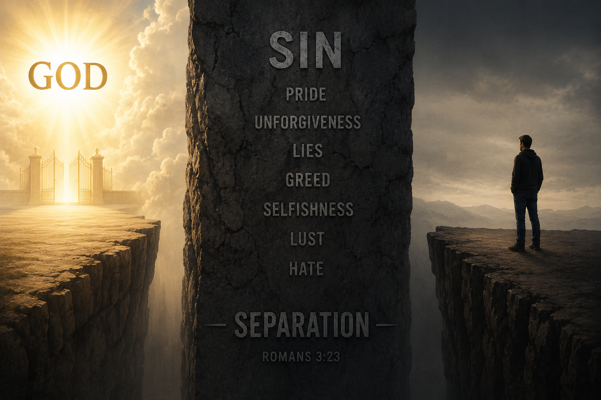
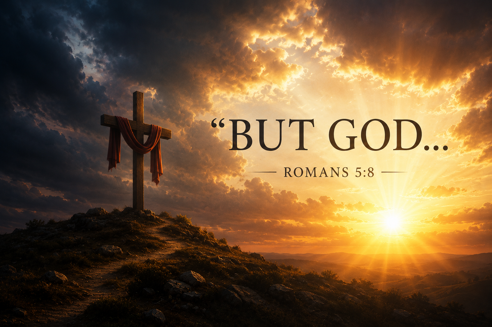
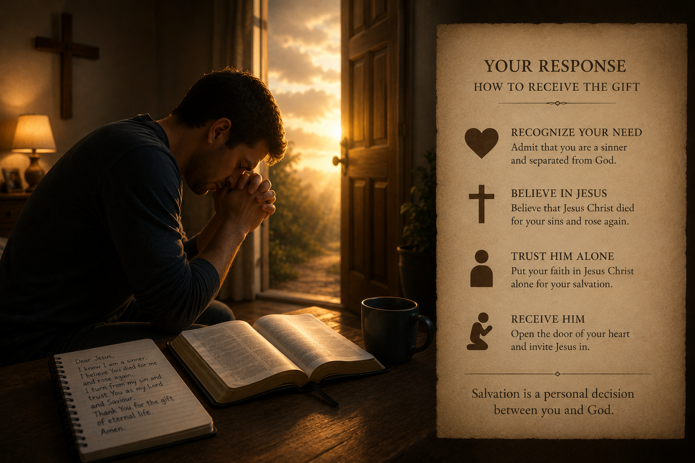

The Most Important Thing You Will Ever Read
Before the first star was hung in the sky, God knew your name — and He made a way to bring you home. This is that story.
The very first words of the Bible are among the most profound ever written. Before time, before matter, before anything existed — there was God. He is eternal, all-powerful, and perfect. Out of His abundant love and creative power, He made everything that exists.
"In the beginning God created the heaven and the earth."
Genesis 1:1God did not stop at stars and seas. His crowning creation was you. He formed man and woman in His own image — not as an accident of nature, but as a deliberate, loving act. You are not here by chance. You have value, dignity, and purpose because the God of the universe made you.
"So God created man in his own image, in the image of God created he him; male and female created he them."
Genesis 1:27God's original design was perfect. There was no death, no pain, no separation from God. Man walked with God in the garden — fully known and fully loved.

God created man for fellowship with Himself, but He also gave man a free will — the ability to choose. In the Garden of Eden, Adam and Eve chose to disobey God. That one act of rebellion introduced sin into the human race, and with it, a separation between man and his Creator.
Sin is not just the bad things we do — it is a condition of the heart that every person is born with. The Bible is clear: no one is exempt.
"As it is written, There is none righteous, no, not one."
Romans 3:10"For all have sinned, and come short of the glory of God."
Romans 3:23"Come short" means to miss the mark. God's standard is perfect holiness. No amount of good works, religious effort, or moral living can close that gap on our own. Every person who has ever lived — except Jesus Christ — has fallen short.
Sin is not without consequence. A perfectly just God cannot overlook wrongdoing — any more than a good judge would let a guilty criminal go free simply because they also did some good things. There is a price for sin, and God tells us what it is.
"For the wages of sin is death…"
Romans 6:23aThe word wages means what is owed — what you have earned. Physical death is part of that penalty, but the deeper meaning is spiritual death: eternal separation from God. This is not God being cruel — it is God being perfectly just. Sin has a cost.
This is the bad news. Every person — regardless of how good they have tried to be — has sinned, and the just penalty for that sin is eternal death. But read on. The story does not end here.

Just when the situation seems hopeless — God steps in. Two of the most powerful words in all of Scripture are these: "But God." Man had sinned. Man deserved death. But God, in His infinite love, chose to do something extraordinary.
"But God commendeth his love toward us, in that, while we were yet sinners, Christ died for us."
Romans 5:8God did not wait for us to clean ourselves up. He did not wait until we were worthy. While we were still rebels — still enemies of God — He sent His Son. That is not just love; it is a love beyond anything the world has ever seen.
"For God so loved the world, that he gave his only begotten Son, that whosoever believeth in him should not perish, but have everlasting life."
John 3:16Notice the word "whosoever." That means there is no one too far gone, no sin too great, no past too dark. God's love reaches anyone who will receive it — including you.
Seven hundred years before Jesus was born, the prophet Isaiah described His death in striking detail. God had planned this from eternity — the Saviour was not an afterthought. He was the answer God had prepared from before the foundation of the world.
"But he was wounded for our transgressions, he was bruised for our iniquities: the chastisement of our peace was upon him; and with his stripes we are healed. All we like sheep have gone astray; we have turned every one to his own way; and the LORD hath laid on him the iniquity of us all."
Isaiah 53:5–6Jesus Christ — fully God and fully man — lived a perfect, sinless life. He then willingly went to the cross and took upon Himself the punishment that we deserved. The just died for the unjust. The sinless bore the sin of the sinful. But that is not the end of the story.
"For I delivered unto you first of all that which I also received, how that Christ died for our sins according to the scriptures; and that he was buried, and that he rose again the third day according to the scriptures."
1 Corinthians 15:3–4The resurrection changes everything. Jesus did not merely die — He conquered death. His resurrection is proof that the payment for sin was accepted, that death has been defeated, and that eternal life is now available.

Here is where many people get confused about Christianity. They assume that getting right with God is about trying harder, doing more, or being religious enough. But the Bible is crystal clear: salvation is not something you can earn — it is a gift you receive.
"…but the gift of God is eternal life through Jesus Christ our Lord."
Romans 6:23b"For by grace are ye saved through faith; and that not of yourselves: it is the gift of God: not of works, lest any man should boast."
Ephesians 2:8–9Grace means "unmerited favour" — receiving something good that you did not deserve and could not earn. The price of your salvation was paid in full by Jesus Christ on the cross. Your good works cannot add to it. Your bad past cannot take it away. It is a free gift, offered to anyone who will receive it.

Jesus Himself described the moment of salvation in simple, intimate terms. He is not forcing His way in — He is knocking. The response is yours to make.
"Behold, I stand at the door, and knock: if any man hear my voice, and open the door, I will come in to him, and will sup with him, and he with me."
Revelation 3:20So what does it mean to open that door? The Bible calls it repentance and faith — turning from your sin and trusting in Jesus Christ alone for your salvation.
"That if thou shalt confess with thy mouth the Lord Jesus, and shalt believe in thine heart that God hath raised him from the dead, thou shalt be saved. For with the heart man believeth unto righteousness; and with the mouth confession is made unto salvation."
Romans 10:9–10"For whosoever shall call upon the name of the Lord shall be saved."
Romans 10:13Salvation is not repeating a prayer as a magic formula. It is a genuine turning of the heart — acknowledging that you are a sinner, believing that Jesus Christ died and rose again to pay for your sin, and trusting Him alone as your Lord and Saviour.
If you believe what you have read and want to receive Jesus Christ as your Saviour, you can come to God right now — wherever you are. God hears every sincere heart. You might pray something like this:
Speak these words from your heart to God:
"Dear God, I know that I am a sinner.
I know that I deserve the penalty for my sin.
But I believe that Jesus Christ died on the cross to pay for my sins,
and that He rose from the dead and is alive today.
Right now, I turn from my sin and I trust Jesus Christ alone
to save me. I receive Him as my Lord and Saviour.
Thank You for the free gift of eternal life.
Help me now to live for You.
In Jesus' name, Amen."
There are no special words required. God sees your heart. What matters is genuine faith and trust in Jesus Christ.
"But as many as received him, to them gave he power to become the sons of God, even to them that believe on his name."
John 1:12If you have trusted Jesus Christ today, that is the most important decision you will ever make. Here is how to take your next steps.
We Would Love to Hear From You
If you prayed to receive Christ, or if you have questions about what you have read, our church family would be honoured to talk with you and help you take your next steps.
Contact Us Visit Our Church